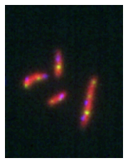
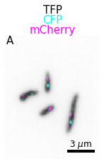

Create your first plots¶
Imagine that you have acquired some microscopy data. First you import those as Numpy arrays. Here we use a dataset that one can find online in the repository of this package. We use scikit-image here but you can import your files as you want:
import skimage.io
image = skimage.io.imread('https://github.com/guiwitz/microfilm/raw/master/demodata/coli_nucl_ori_ter.tif')
image.shape
(3, 30, 220, 169)
We have an image with 3 channels and 30 time points. We now only take the first time point:
image_t0 = image[:,0,:,:]
Now we can import the microfilm package. For simple plots, we need the microfilm.microplot submodule:
import microfilm.microplot
Plotting a color composite image of our numpy array is now as easy as using:
microfilm.microplot.microshow(image_t0);

With a few options more we can change the colormaps and add information on the figure:
microfilm.microplot.microshow(image_t0, cmaps=['gray','pure_magenta','pure_cyan'], flip_map=True,
label_text='A', label_color='black', channel_label_show=True, channel_names=['TFP','CFP','mCherry'],
unit='um', scalebar_unit_per_pix=0.06, scalebar_size_in_units=3, scalebar_color='black');

Next steps¶
You can do more than such single plots: